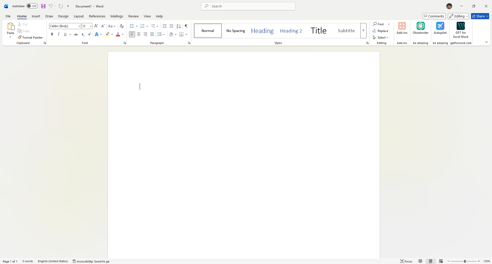
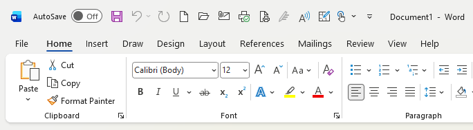
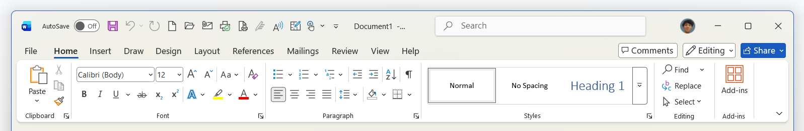
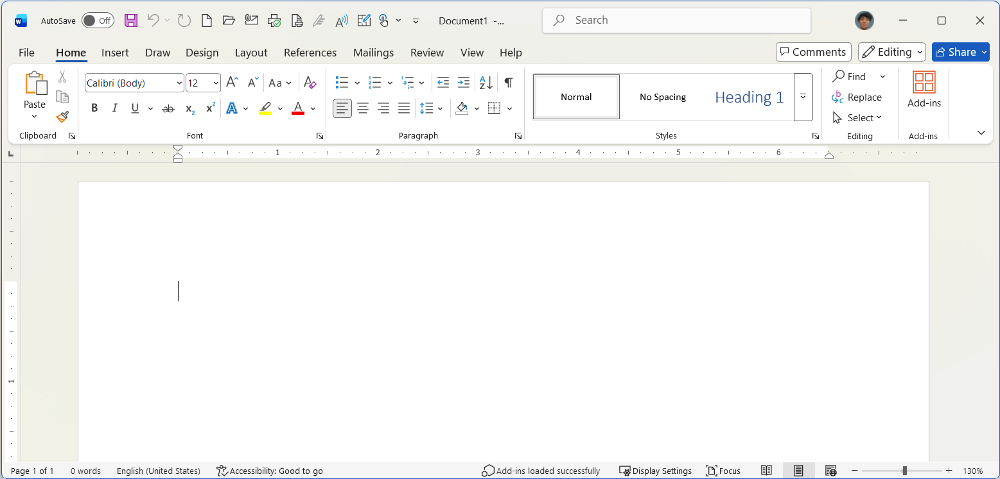
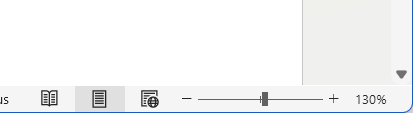

Sebelum mulai mengetik dan membuat dokumen, sangat penting untuk memahami tata letak dan tombol-tombol yang ada di dalam Microsoft Word. Berikut adalah bagian-bagian utamanya:


Terletak di pojok kiri atas jendela Word. Bagian ini berisi tombol-tombol perintah yang paling sering digunakan agar Anda bisa mengaksesnya dengan cepat, seperti:

Ribbon adalah panel utama di bagian atas yang berisi semua alat untuk mengedit dokumen. Ribbon terbagi menjadi beberapa bagian:
Lembar Kerja (Document Area) adalah area putih kosong menyerupai kertas di mana Anda mengetik teks, memasukkan gambar, dan membuat dokumen.
Ruler (Penggaris) terletak di bagian atas dan kiri area dokumen. Alat ini sangat berguna untuk mengatur margin (batas kertas), indentasi paragraf, dan menyelaraskan gambar.


Berada di bagian paling bawah jendela Microsoft Word.
+) untuk memperbesar tampilan kertas, dan ke kiri (-) untuk memperkecilnya agar nyaman di mata Anda.